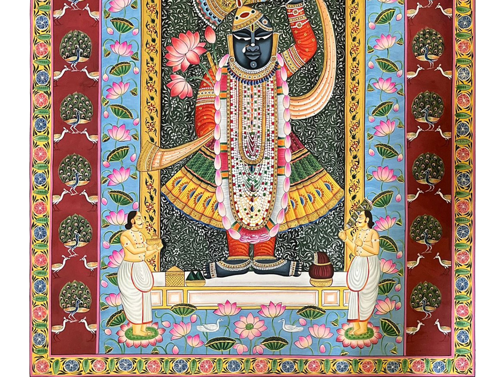

Pichwai paintings feel like devotion wrapped in beauty. These large cloth paintings are filled with delicate details—lotus flowers, cows, and serene landscapes—all centered around the divine presence of Krishna in the form of Shrinathji. The romance here is purely devotional and loving. It reflects the bond between the devotee and God—gentle, affectionate, and full of care. The calm expressions and rich surroundings create a peaceful atmosphere, like a sacred space where beauty and faith meet.
Pichwai painting originated in Nathdwara, Rajasthan. • Developed around the Shrinathji Temple • Created as backdrops for temple idols, especially Shrinathji (a form of Krishna) • Painted according to festivals and seasons For example: • Monsoon scenes • Lotus pond themes • Festival celebrations These paintings were not just decorative—they were part of temple rituals and worship.
Pichwai paintings are known for their intricate detailing and richness: • Cloth-Based Painting Painted on large pieces of fabric • Fine Detailing Extremely intricate work, especially in flowers and ornaments • Natural & Mineral Colors Traditionally used for authenticity • Use of Gold and Rich Colors Adds depth and luxury • Symmetrical Composition Balanced design centered around the deity • Thematic Representation Different themes based on time, season, and rituals
Pichwai paintings are created by skilled artisans of Nathdwara. • Often belong to traditional painter families • Work closely with temple traditions • Require deep understanding of religion, symbolism, and detail This makes Pichwai a blend of art, devotion, and ritual practice.